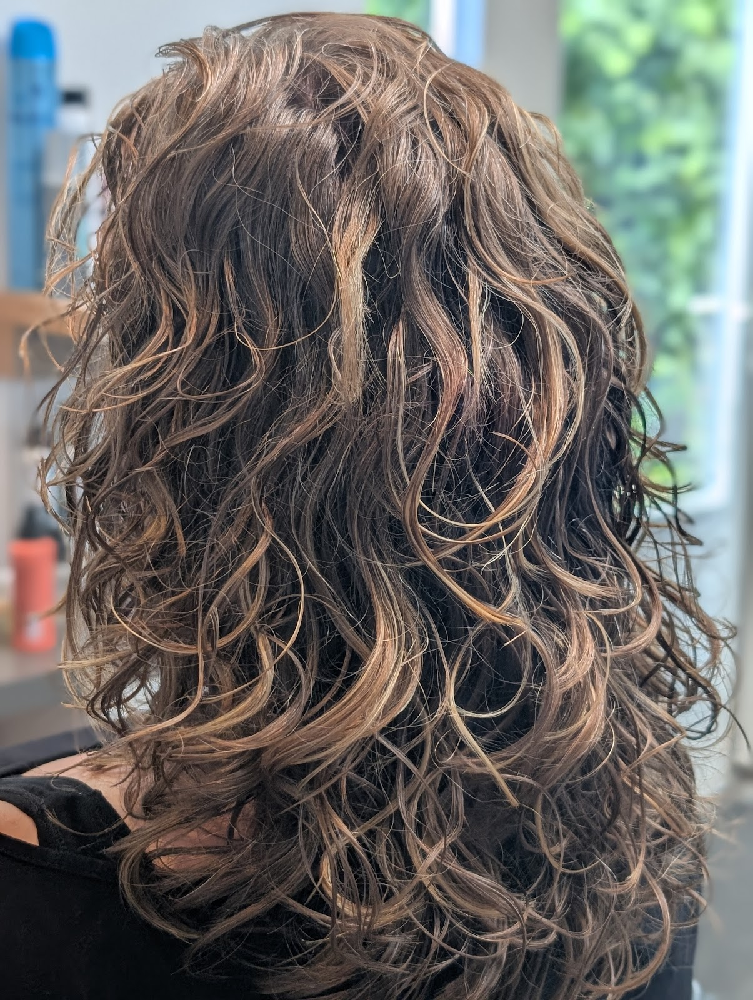
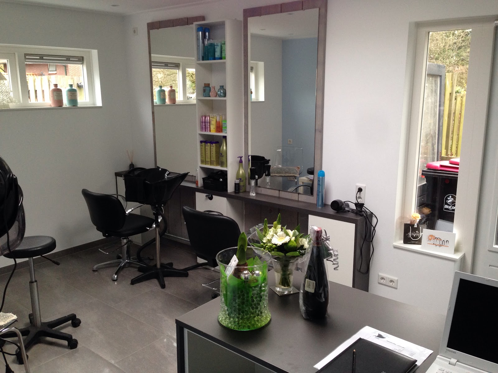
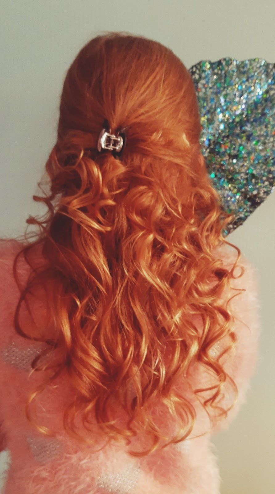
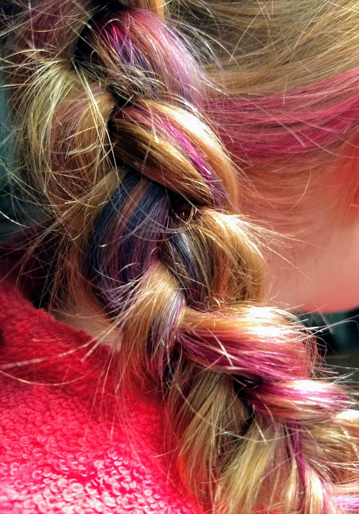
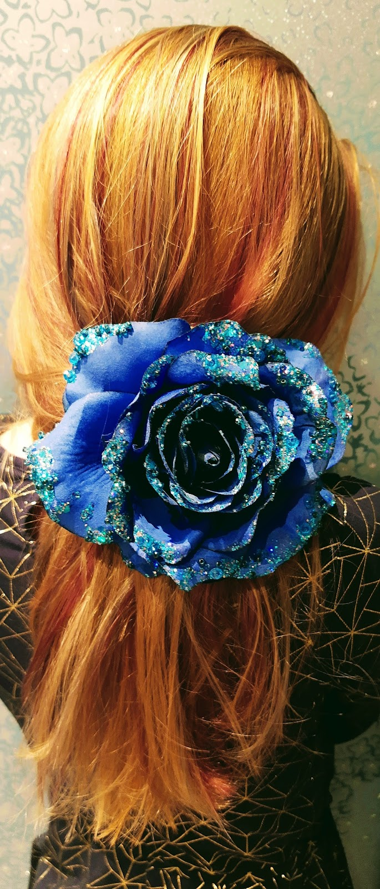

Kapper aan de Molenstraat in Aalten
Haar dat bij je past.
Persoonlijk advies, knippen en kleuren in mijn sfeervolle salon. En heb je krullen? Daar knip ik ze met de Curlsys techniek voor meer volume.
5 sterren uit 15 Google-reviews

Curlsys
meer volume, betere krul

Even samen kijken wat bij je past
Ik ben Ellen. In mijn eigen salon in Aalten heb je mijn volle aandacht. Samen gaan we op zoek naar het kapsel dat bij jou en je haar past.
Of je nu wilt knippen, kleuren of eens iets heel anders wilt: ik geef je graag persoonlijk advies, zodat je de salon uitloopt met haar waar je blij van wordt.
"Gewoon bekwaam en vriendelijk en prettige behandeling."

Krullen knip je niet zoals steil haar.
Voor krullen werk ik met de bekende Curlsys kniptechniek. Ik knip je haar zo dat elke krul zijn eigen vorm houdt.
Het resultaat: meer volume en een betere krul. Krullen die je weer graag laat zien.
Uit de salon
Een greep uit het werk van Ellen.


Wat klanten zeggen
5 sterren uit 15 Google-reviews
"Ik verander geregeld van kleur, model etc..en dat is bij mijn haar niet gemakkelijk. Het is dun, sluik haar. En naar mate je ouder wordt, gaat het ook nog verder achteruit. Maar Ellen weet er altijd een mooi en gemakkelijk model uit te halen. Ik vertrouw haar geheel in haar adviezen. Voor mij geen ander meer."
"Ze is super vriendelijk, Mooie salon. Knipt goed. Helemaal positief"
"Fijne kapster. Knipt de haren altijd top!"
"Al jaren zeer tevreden. Altijd goed."
Afspraak maken? Bel of mail me even.
Op maandag en donderdag ben ik ook 's avonds open, handig als je overdag werkt. Tot gauw!
Openingstijden
- Maandag
- 09:00 tot 14:00
18:00 tot 21:00 - Dinsdag
- 09:00 tot 14:00
- Woensdag
- Gesloten
- Donderdag
- 09:00 tot 14:00
18:00 tot 21:00 - Vrijdag
- 09:00 tot 14:00
- Zaterdag en zondag
- Gesloten